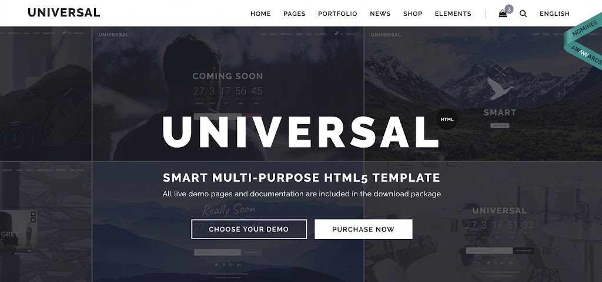
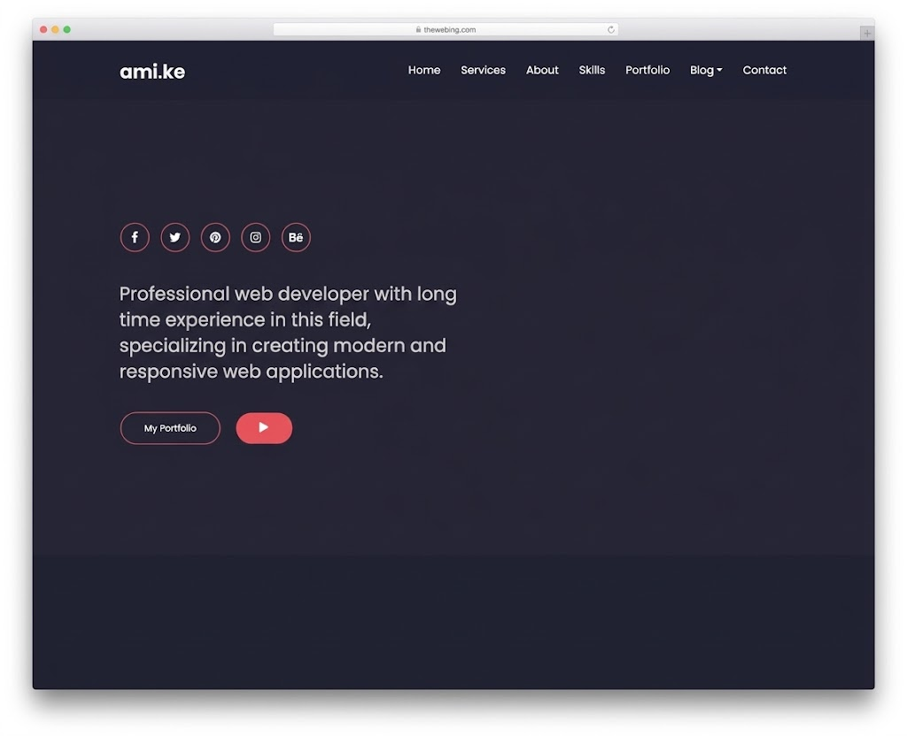

My Projects & Achievements
A record of what I create, practise, and accomplish.
Featured Projects
Project 1: My First Web Page

My first attempt at building a web page with HTML.
This project helped me understand how HTML structures headings, paragraphs, links, and images.
What I learned:
- Creating a basic HTML document
- Using headings and paragraphs
- Adding links and images
Project 2: Personal Website

A website documenting my learning and development.
This project allowed me to apply what I learned about HTML and CSS to create a more visually appealing and user-friendly website.
Website sections
- Personal information
- My work
Achievements
- Learning achievement: Completed my first HTML project
- Academic achievement: Built a personal website to showcase my learning journey
- Personal achievement: Learned to use basic CSS for styling
Project Files
Visitors can use the link below to download a sample project document.
Download Project Document
My Next Goals
My future projects will help me develop these abilities:
- Improve my CSS skills to create more visually appealing websites
- Learn JavaScript to add interactivity to my web pages
- Explore responsive design to ensure my websites work well on all devices